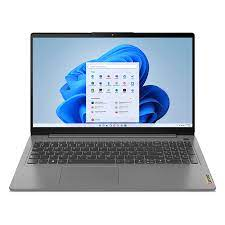

Lenovo Ideapad 3:
Descrição:

O notebook Lenovo IdeaPad 3 foi projetado para tornar sua vida mais fácil. Seu design elegante e inovador e sua comodidade para transportá-lo, farão com que seja seu PC favorito. Qualquer tarefa que você proponha, seja em casa ou na oficina, você fará isso com facilidade graças ao seu poderoso desempenho.
Tela com alto impacto visual
A sua tela LCD de 15.6" e 1920x1080 px de resolução lhe dará cores mais vivas e definidas. Seus filmes e séries favoritas ganharão vida, com maior qualidade e definição em cada detalhe.
Eficiência na ponta dos dedos
Seu processador Intel Core i5 de 4 núcleos, é projetado para aquelas pessoas que geram e consomem conteúdo. Com esta unidade central, a máquina realizará vários processos simultaneamente, desde a edição de vídeo até o retoque de fotos com programas profissionais.
Unidade sólida poderosa
O disco sólido de 256 GB faz o equipo funcionar em alta velocidade e por isso oferece a maior agilidade para operar com diversos programas.
Um processador exclusivo para os gráficos
Sua placa de vídeo Intel Iris Xe Graphics G7 80EUs torna a este dispositivo numa ótima ferramenta de trabalho para qualquer profissional de design. Ele vai permitir que você atinja um ótimo desempenho em todos os seus jogos e outras tarefas diárias que requerem processamento gráfico.